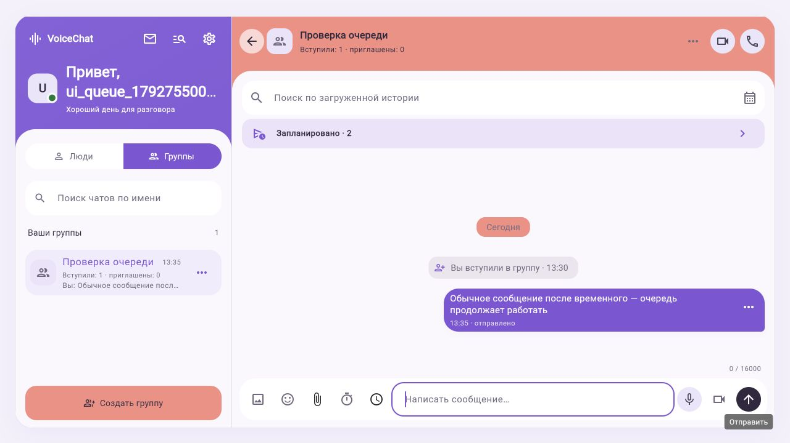
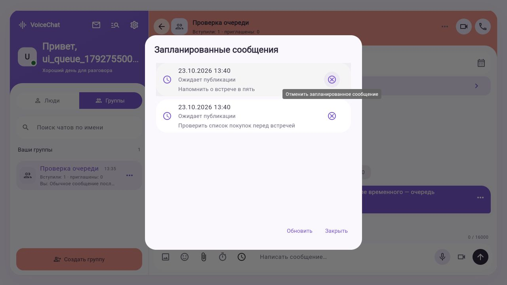

← Все 35 экранов до / после · Открыть основной сайт
Очередь запланированных сообщений
23 октября 2026. Раньше очередь открывалась только из меню отложенной отправки. Теперь под поиском видна строка «Запланировано · N». Нажатие раскрывает тексты, даты и статусы. Полный текст открывается нажатием на карточку. После отправки или отмены задания счётчик уменьшается.
Снимки обычного клиента во встроенном браузере. Отдельный тестовый аккаунт, комната с одним участником. Общий Flutter-код Android и веба; эти новые снимки показывают веб. Android debug собран, реальный телефон в этой итерации не проверен.
Полноценный веб-сайт
Количество в чате
Раскрытая очередь
Проверено: временное сообщение на 10 секунд → обычное сообщение, оба подтверждены сервером. Два задания расписания → счётчик 2 → раскрытие → отмена → 1 → отмена → панель скрыта. Тестовые задания отменены.